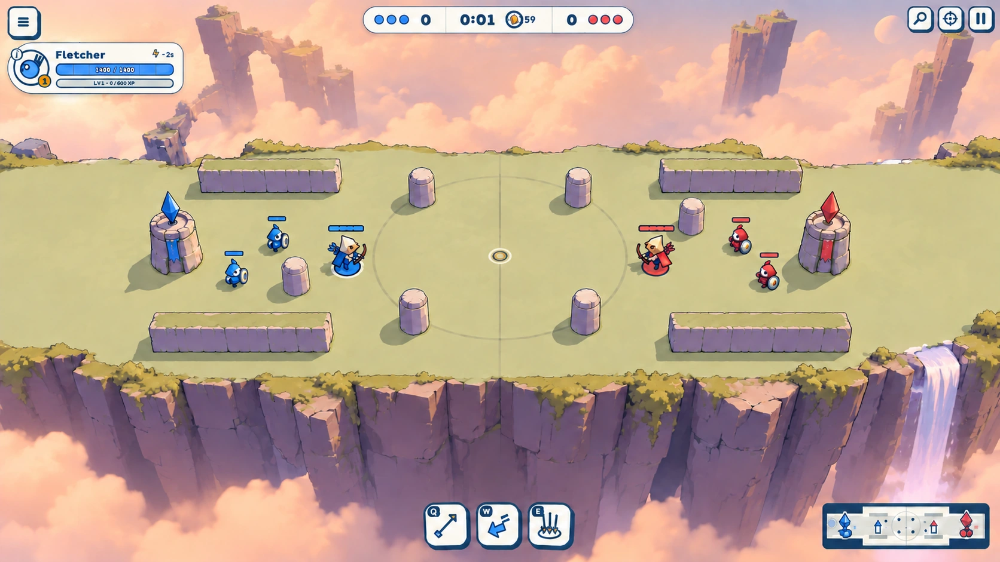
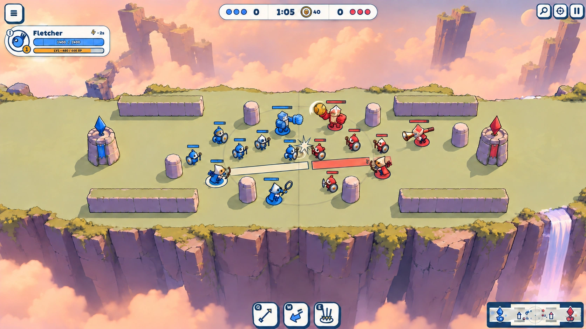
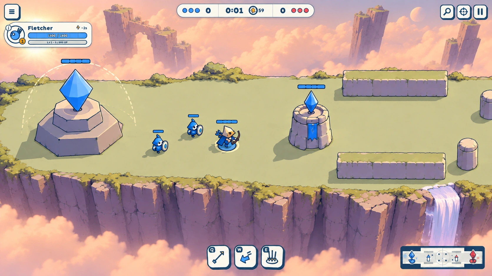
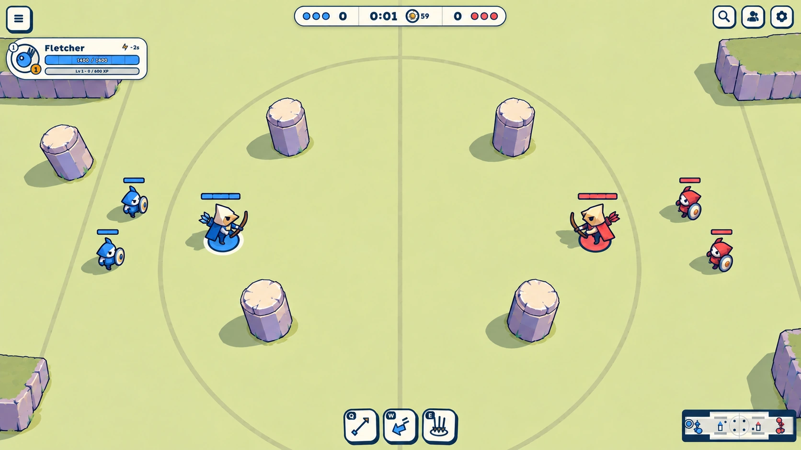
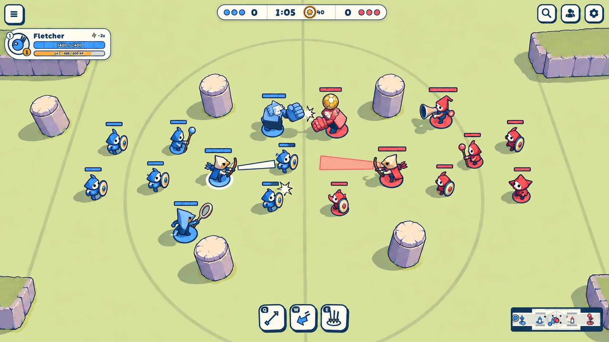
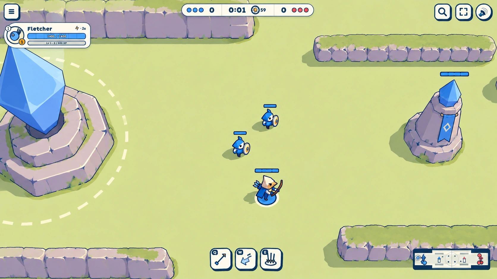

Overthrow day
To review · 2026-10-10
Is this Overthrow?
Round 2: a crisp sunlit plateau over a violet cliff, dropping into warm glowing cloud. Low warm light, cool shadows, quiet sage ground and heavier stone; combat keeps the saturated colour. The match camera sits higher to show both rims. These are restyle targets.
Round 2 · Round 1 · Builder translation
Round 2 · Visible drop and warm light
2026-10-10 · To review. The five rules from the floating-pillars reference drive all three frames: depth falloff, a visible drop, one warm sun, muted scenery with a few accents, and broad shapes with little noise.
01 · Establishing

02 · Crowded fight

03 · Tower and core

Five rules to carry into the build
- Depth falloff: crisp plateau and units; distant stone and cloud lose contrast and saturation into warm haze.
- A drop: show the long court rim and a substantial vertical cliff band at the frame border, with cloud below.
- One warm light: low upper-left sun, warm top faces, cool violet shaded faces and directional printed shadows; a soft cream glow in the haze.
- Muted base, few accents: sage moss, pale stone, violet shade and peach cloud; saturated blue, red and Ball gold belong to combat.
- Big shapes, little noise: bevelled prisms, broad drums and stepped plinths; an almost uniform court and sparse rim plants.
Exact round 2 prompts and corrections. Reference: floating pillars.

Round 1 · Retained for comparison
Oskar's feedback: too safe; a flat lawn fills the frame, with no edge, depth or light. Round 2 is the current review target.
01 · Establishing

02 · Crowded fight

03 · Tower and core

Builder translation
- Keep the shipped geometry as the authority for positions and sizes: 104 × 26 m footprint, one lane, both flanks and every collision box. Each side has one tower and one core.
- Keep the 58° match orientation and HUD rectangles. Round 2 explicitly allows a higher, wider framing so the court reads smaller and both rims and the front cliff show. The first two views are midfield; the third pans along the lane to the blue base.
- Use a single flat court colour, no ink or lighting gradient on the floor. Stone inlays differ by at most 10%; any grain stays within ±7%. Do not reproduce the generator's soft floor shading.
- Build stone from bevelled prisms, drums and stepped plinths; use a few geometry splits for chips. Tower height 4 m; core height 7 m. The core crystal floats above its plinth and wears a dashed cream dome while shielded.
- Thick navy outlines on units and structures; thin outlines on scenery; no floor outlines. Print ellipse shadows. Team foot discs and exact hitbox tells carry the fight; only the player gets a cream outer ring.
- Reserve saturated blue and red for combat and team accents, gold for the Ball and ammo. Replace decorative shield bosses with ivory/navy. Preserve hero silhouettes and the 0.6 minion scale.
- Put the surround inside the frame: a violet cliff at least 30% darker than the quiet court, pale peach cloud, white/lilac waterfalls and hazy distant stone isles. Use warm lit stone against cool violet shadows. Keep haze glow off the playable floor and plants on the outer rim. The drop is visual; collision bounds stay unchanged.
- Code builds every unit, structure and spell. A cloud plate and a quiet seamless ground tile are the optional painted textures; these frames themselves never ship into WebGL.
Built-in image generator; round 2 prompts and retained round 1 prompts. References: picked Sun Spell style, look direction, map contract and the live shipped Overthrow match.